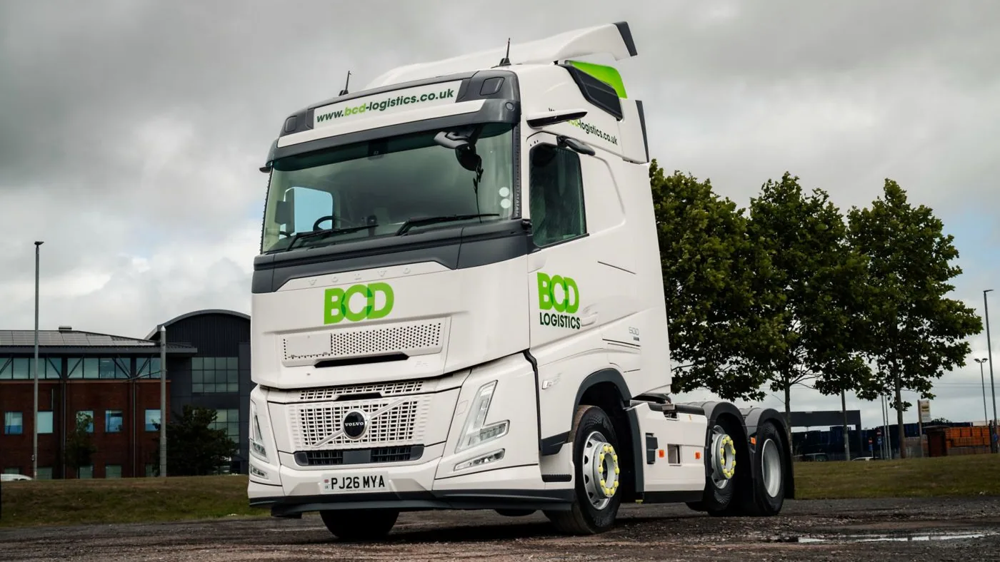

Volvo Trucks informó el 10 de septiembre de 2026 que BCD Logistics incorporó cinco FH Aero 6x2 Globetrotter. Son los primeros camiones de la marca para esta empresa de transporte de contenedores, con sede en Trafford Park, Manchester.
La decisión siguió a un acuerdo inicial de seis meses con un vehículo demostrador facilitado por Thomas Hardie Commercials. Las unidades adquiridas combinan motores D13K Step E de 500 hp y 2.500 Nm con transmisión automatizada I-Shift de doce velocidades. Incorporan cámaras en lugar de los espejos exteriores tradicionales y contratos Volvo Gold de cinco años.
El cliente valora consumo, comodidad y atención recibida. El comunicado no ofrece una comparación independiente ni un porcentaje de ahorro reproducible. La noticia corresponde al Reino Unido y no anuncia una entrega en Argentina.
Probar sobre una tarea conocida
Análisis de Zabala Repuestos. Una demostración puede ser mucho más informativa cuando se realiza en un servicio que la empresa ya conoce. Así aparecen preguntas concretas sobre tiempos, maniobras y organización, en lugar de limitar la experiencia a una vuelta de presentación.
Para aprovecharla, conviene describir el recorrido antes de comenzar. El registro debería permitir reconocer qué días fueron habituales y cuáles tuvieron condiciones diferentes. Esa distinción evita que una demora excepcional o una jornada especialmente favorable defina por sí sola la evaluación del camión.
Consumo y productividad no son la misma pregunta
Una comparación necesita explicar qué trabajo hizo cada unidad. El resultado pierde claridad si se enfrentan recorridos o cargas distintos sin señalarlo. La empresa puede acordar una forma estable de reunir información y conservarla junto con las observaciones de operaciones.
También conviene mirar el cumplimiento del servicio. Un vehículo puede generar una buena impresión y, aun así, requerir cambios de organización que deban presupuestarse o resolverse. Registrar esos cambios permite discutir el resultado completo sin atribuir todo a una sola característica técnica.

Escuchar al conductor con preguntas concretas
Una opinión general de comodidad puede ampliarse preguntando por acceso, postura, controles y tareas frecuentes. Resulta útil distinguir lo que requiere acostumbramiento de lo que dificulta el trabajo habitual. El registro por escrito ayuda a comparar experiencias entre quienes participan de la prueba.
Con interfaces nuevas, la formación debe acompañar la evaluación. La persona necesita conocer el funcionamiento previsto y el canal para resolver dudas. Una demostración bien organizada no consiste en entregar las llaves y esperar una conclusión: incluye preparación, seguimiento y revisión conjunta.
El servicio también se puede observar durante el ensayo
La relación con el proveedor deja información incluso cuando no aparece una falla. Importa cómo responde una consulta, qué antecedentes solicita y quién sigue cada tema. Esas interacciones permiten conocer la calidad de la comunicación antes de que exista una urgencia.
Al revisar una propuesta de mantenimiento, interesa conocer su alcance exacto. La flota debería poder identificar tareas incluidas, exclusiones, procedimientos de atención y condiciones de disponibilidad. Un nombre comercial no reemplaza la lectura de lo que efectivamente recibe el operador.
Una experiencia útil para transportistas argentinos
El caso ofrece un criterio transferible: evaluar el conjunto sobre una necesidad real antes de ampliar una decisión. No hace falta suponer que la configuración británica será la adecuada para otra empresa. Lo valioso es ordenar qué se quiere comprobar y con qué evidencia.
Para una consulta local, conviene compartir con el proveedor el tipo de carga, la zona de trabajo y el parque existente. La comparación también debe considerar cómo convivirá la unidad con los procedimientos del taller y con los repuestos que utiliza la flota.
Una compra de camiones suele proyectarse durante años. Por eso, la conclusión de una prueba debería quedar documentada, incluyendo dudas y condiciones pendientes. Ese material permite que la decisión siga siendo comprensible después de la entrega y sirve como referencia cuando llega el momento de renovar otra unidad.